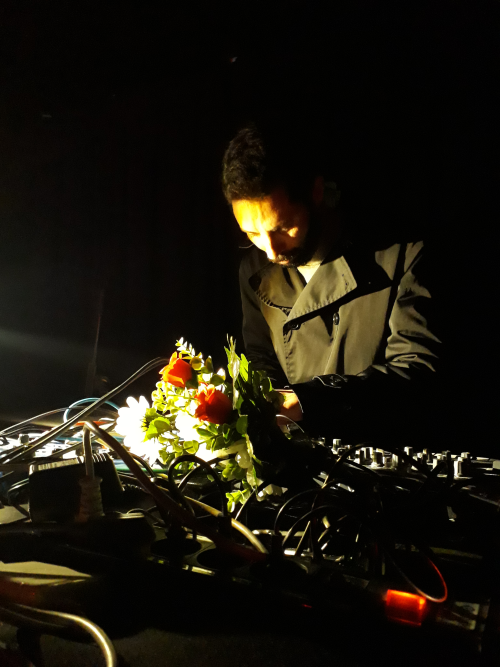

About

Morte Botânica started in 2014 as an experimental music project, but Eduardo Cardoso's thirst
for more abstract sounds led him to explore the territories of Harsh Noise. Since then this genre
became his main form of expression with Morte Botânica. Mainly a studio project, Eduardo
Cardoso rarely plays live.
Live shows and performances
2021
- Declamações, Orações e Outras Emoções, Capela da Misericórdia de Sines, Sines, Portugal
2020
- A Night In Fear, Die Elektrischen Vorspiele blog 11º aniversary, Passos Manuel, Porto, Portugal
2015
- Encontro de Bandas da Casa da Juventude de Sines, Sines, Portugal
With Coletivo Mesclório Colectivo
2023
- Espaço Celeiros, Évora, Portugal
- Centro cultural Malaposta, Odivelas, Portugal
2022
- Centro D'Artes de Aljustrel, Aljustrel, Portugal